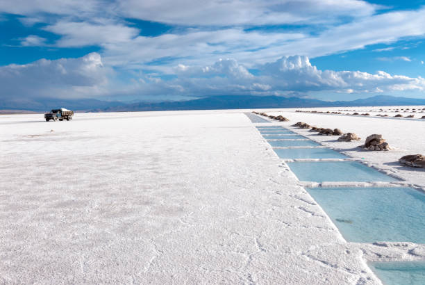
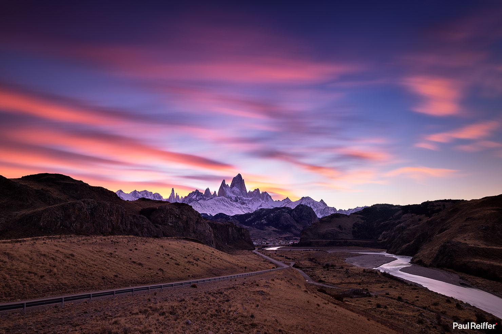
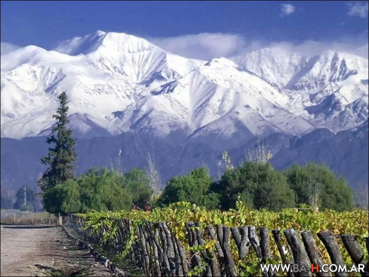
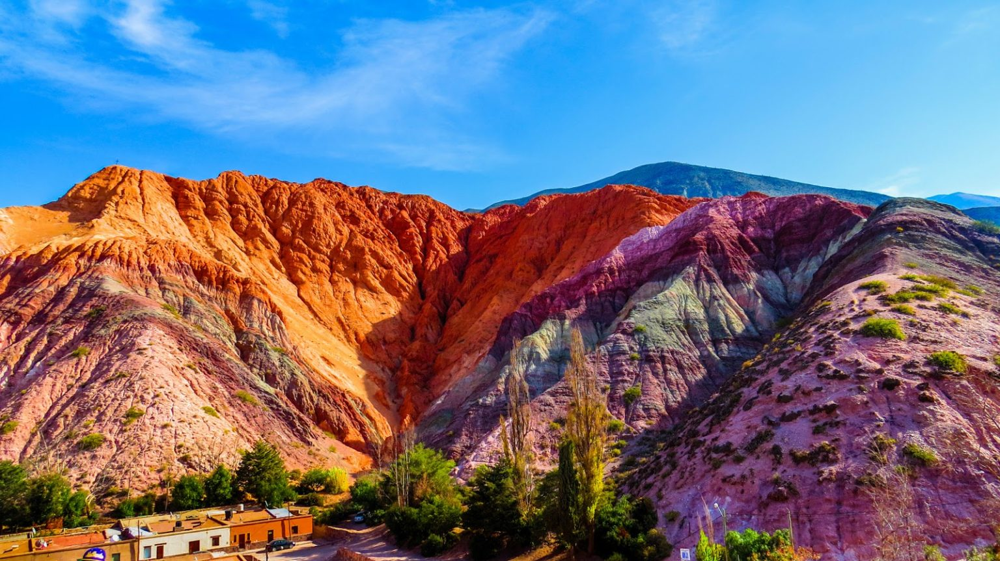

Viajá por Argentina
Explorá la Patagonia, recorré el Norte andino o disfrutá de la selva misionera. Tenemos opciones para todos los gustos y tipos de viajeros.
Ir a DestinosAventuras Únicas

Patagonia
Trekking en glaciares y lagos turquesas.

Cuyo
Montañas, viñedos y aventura en la cordillera.

NOA
Pueblos históricos y paisajes de colores.
Opiniones
Natalia M.
«Viaje increíble. Los consejos sobre Bariloche fueron perfectos. ¡Muy recomendable!»
Andrés F.
«Excelente guía para recorrer Iguazú. No nos perdimos de nada. ¡Gracias!»